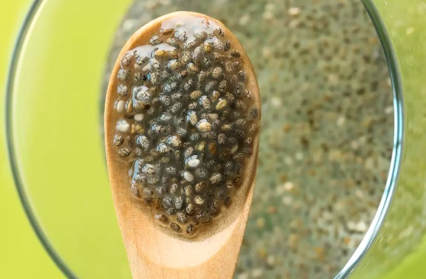
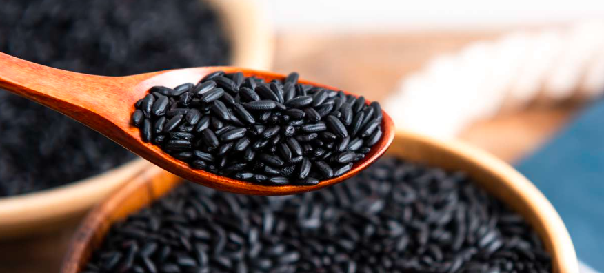
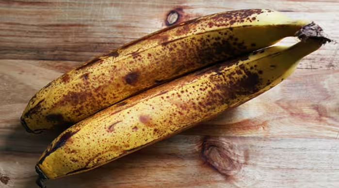

When I'm not reaching for a bag of Chickpea Chips or Brussels Sprout Puffs maybe I'll cook up a batch of something fun. Listen... I was a healthfood kid. The nostalgia of 'Natural Food Store' ingredients blended with the intrigue of things I wasn't allowed to have is a lot of what fuels my snacking habits:
  